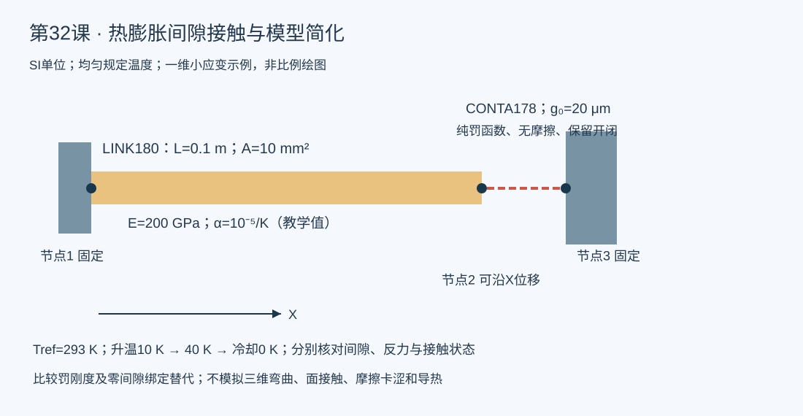

验证状态：已通过 MAPDL 求解
MAPDL 2023 R1五个隔离工况均返回0、错误0；独立解析反力/位移、双端平衡、接触状态及杆二分验证通过。标准闭接触反力396.039604 N，穿透0.198019802 μm；零间隙绑定替代分别为200/800 N。仅限定一维教学模型。

今日目标
运行真实MAPDL单边接触，区分“有间隙且可开闭”和“绑定到固定挡块”两种连接；用解析式验证，理解简化连接改变物理问题的风险。
物理问题、假设与单位
一维等效热膨胀杆的一端固定，另一端面对固定挡块。L=0.1 m、A=10 mm²、E=200 GPa、α=10⁻⁵/K、初始轴向间隙g₀=20 μm、参考温度293 K。所有值是教学常数，不是从论文抽取的真实燃料/控制棒材料。规定温升10 K、40 K后冷却回0 K；伪时间是载荷步标识，并非传热时间。
杆用LINK180，界面用CONTA178，默认本例为无摩擦机械接触。该单节点接触不解析面压力分布、弯曲、多个格架支承、辐照或实际落棒动力学；本例也不求解导热或热接触导热。
关键命令
SECTYPE/SECDATA给杆截面，热伸长由MP,ALPX、TREF与BF,TEMP决定。KEYOPT(2)=1选择纯罚函数便于解析核对；绝对罚刚度FKN以负输入指定，单位N/m。KEYOPT(4)=1仅用实常数间隙，避免又把节点几何间隙叠加进去。KEYOPT(5)=4指定全局X正向接触法向，I节点在杆端，J节点在挡块。RMODIF显式声明假设面积；它不自动成为真实接触面积。NSUBST/AUTOTS控制载荷增量；SET,ii,LAST读取各载荷步末值。ETABLE读取法向力与状态；压缩法向力为负，开状态1，无摩擦闭合状态2。*VWRITE只传标量。数组索引会继续向后写剩余数组项，产生貌似真实的重复记录，先用tnow转换为标量。
Mechanical中的对应判断
在Mechanical中先核对实际间隙与Contact Tool初始状态，再选择Frictionless/Frictional等接触模型和适当法向刚度；Bonded替代表示另一种连接假设。CONTA178只是本课底层单节点机制示范，不能把其KEYOPT编号逐项照搬到Mechanical常用面接触单元。
机械和热接触分别定义。热接触需要导热系数、热阻和适用间隙/压力关系；本课有机械热载荷，仍不代表已经模拟跨界面的传热。
独立解析参照
自由热伸长δ=αΔTL，杆轴向刚度K=EA/L=2×10⁷ N/m。
当δ≤g₀，F=0、杆端位移u=δ。闭合后，纯罚模型F=K Kc/(K+Kc)·(δ−g₀)，u=g₀+F/Kc，剩余间隙g₀−u为负且等于罚函数穿透。刚性无穿透极限F∞=K(δ−g₀)=400 N。零间隙固定杆端的绑定替代则Fbond=Kδ，改变了接触起点。
预期结果与本机实际验证
五个工况均在独立目录用MAPDL 2023 R1求解，返回码0、错误0。开间隙及冷却步有参考力接近零的收敛提醒；绑定对照的所有自由度约束，有“无活动自由度”提醒。已分别用解析式和反力平衡核对，保留警告说明。
| 模型/罚刚度 | 10 K时反力 | 40 K时反力 | 闭合罚穿透 | 相对刚性400 N偏差 |
|---|---:|---:|---:|---:|
| 保留间隙，2×10⁸ N/m | 0 N | 363.636364 N | 1.818182 μm | 9.091% |
| 保留间隙，2×10⁹ N/m | 0 N | 396.039604 N | 0.198020 μm | 0.990% |
| 保留间隙，2×10¹⁰ N/m | 0 N | 399.600400 N | 0.019980 μm | 0.100% |
| 零间隙固定杆端/绑定替代 | 200 N | 800 N | 不适用 | 不是相同物理模型 |
冷却回参考温度后真实接触重新张开，反力0、恢复20 μm间隙。杆二分成两个单元与单杆结果一致；这只检验常数一维模型的离散链，不推广为复杂三维模型已收敛。绑定对照导出的gap字段只是沿用坐标差，不代表存在可开闭接触。
实际三行CSV与五工况验证摘要可下载。力除以假设面积只能得到本例平均压力，不能作为局部峰值接触压力。
验证清单
- 单位、截面、无应力温度和温升一一对应；g₀只计一次。
- 分别核对开/闭/冷却状态、独立解析式和两端反力平衡。
- 改变罚刚度并比较穿透及反力，不能只看到“求解成功”。
- 杆二分检验与物理连接简化比较分开；热边界、材料和局部几何还需独立验证。
常见错误
- 直接把间隙连接绑定，导致原本开间隙状态出现虚假反力。
- 正FKN被当成绝对刚度，或几何间隙与实常数重复累计；核对所用单元的定义与单位。
- 用平均反力或频率吻合代替局部压力、磨损、热阻和落棒安全验证。
练习
把g₀改为10/30 μm，预测接触起始温升再求解；在δ=g₀附近细分温度增量。工程扩展选择控制棒支承或燃料—包壳，增加真实几何、温度相关材料和实验标定，再比较轴对称/梁/实体模型，不能将这个轴向杆例子直接当径向PCMI或落棒模型。
官方参考
- [CONTA178定义与结果](https://ansyshelp.ansys.com/public/Views/Secured/corp/v242/en/ans_elem/Hlp_E_CONTA178.html)
- [LINK180](https://ansyshelp.ansys.com/public/Views/Secured/corp/v242/en/ans_elem/Hlp_E_LINK180.html)
- [Mechanical接触高级设置](https://ansyshelp.ansys.com/public/Views/Secured/corp/v252/en/wb_sim/ds_Contact_Advanced.html)
完整 example.inp（逐行中文注释）
01! 第32课：一维热膨胀杆与单边间隙接触；SI：m、N、Pa、K 02/CLEAR,NOSTART ! 清空独立教学数据库 03/FILNAME,lesson32 ! 设置本课结果文件名 04/PREP7 ! 前处理 05lenrod=0.1 ! 等效杆长度，m 06area=1e-5 ! 等效杆面积，m^2，不是自动识别的真实接触面积 07emod=2e11 ! 教学弹性模量，Pa 08alpha=1e-5 ! 教学线膨胀系数，1/K 09gap0=2e-5 ! 初始轴向间隙，m 10kcontact=2e9 ! 接触绝对罚刚度，N/m 11tbase=293 ! 无应力参考温度，K 12ET,1,LINK180 ! 一维承拉承压杆；不解析局部弯曲和应力集中 13MP,EX,1,emod ! 常数弹性模量 14MP,PRXY,1,0.3 ! 材料泊松比 15MP,ALPX,1,alpha ! 热膨胀系数 16SECTYPE,1,LINK ! 定义杆截面 17SECDATA,area ! 杆截面积 18ET,2,CONTA178 ! 两节点单边机械接触，非面接触网格 19KEYOPT,2,2,1 ! 纯罚函数算法，便于独立验证罚刚度效应 20KEYOPT,2,4,1 ! 间隙只取实常数GAP，避免与几何间隙重复计入 21KEYOPT,2,5,4 ! 接触法向为全局X正向 22MP,MU,2,0 ! 本课无摩擦，不模拟轴向插入摩擦或卡涩 23R,2,-kcontact,gap0 ! 负FKN指定绝对N/m值；GAP为正初始间隙 24RMODIF,2,15,area ! 明确假定接触面积，后续压力仅在此假设下有效 25N,1,0,0,0 ! 杆固定端 26N,2,lenrod,0,0 ! 杆自由端/接触节点I 27N,3,lenrod+gap0,0,0 ! 固定挡块节点J 28TYPE,1 ! 选择杆单元 29MAT,1 ! 选择杆材料 30SECNUM,1 ! 选择截面 31E,1,2 ! 建立杆单元1 32TYPE,2 ! 选择接触单元 33MAT,2 ! 选择无摩擦界面材料 34REAL,2 ! 选择接触实常数 35E,2,3 ! 建立接触单元2，法向从I指向J 36D,1,ALL,0 ! 杆固定端约束 37D,3,ALL,0 ! 挡块固定 38D,2,UY,0 ! 去掉简化杆横向刚体自由度 39D,2,UZ,0 ! 去掉简化杆另一横向自由度 40FINISH ! 完成前处理 41/SOLU ! 求解 42ANTYPE,STATIC ! 准静态热载荷路径，不是实际时间积分 43NLGEOM,OFF ! 小应变杆，接触开闭仍为非线性 44TREF,tbase ! 设置无应力温度 45AUTOTS,ON ! 自动载荷子步 46NSUBST,10,100,1 ! 初始/最大/最小子步数 47NEQIT,50 ! 非线性最大迭代次数 48OUTRES,ALL,ALL ! 保留各载荷子步结果 49*DIM,temps,ARRAY,3 ! 三个均温载荷状态 50temps(1)=tbase+10 ! 开间隙：自由热伸长10微米 51temps(2)=tbase+40 ! 闭接触：自由热伸长40微米 52temps(3)=tbase ! 冷却回参考温度，应重新张开 53*DO,ii,1,3 ! 加热—接触—卸载三个状态 54BF,ALL,TEMP,temps(ii) ! 规定均匀温度，不宣称完成导热求解 55TIME,ii ! 伪时间标识载荷步 56SOLVE ! 求解本状态 57*ENDDO ! 完成载荷路径 58FINISH ! 离开求解器 59/POST1 ! 后处理 60*CFOPEN,contact-results,csv ! 创建实际结果CSV 61*VWRITE ! 写表头，下一行保持纯格式描述符 62('step,T_K,Utip_m,Rbase_N,Rstop_N,Fcontact_N,STAT,gap_m') 63*DO,ii,1,3 ! 读取三个载荷步末结果 64SET,ii,LAST ! 设置第ii载荷步最终子步 65*GET,utip,NODE,2,U,X ! 杆端X位移 66*GET,rbase,NODE,1,RF,FX ! 杆固定端X反力 67*GET,rstop,NODE,3,RF,FX ! 挡块X反力 68ETABLE,fn,SMISC,1 ! 接触法向力；压缩为负 69ETABLE,st,NMISC,1 ! 接触状态：1开，2滑动，3粘着 70*GET,fcon,ELEM,2,ETAB,fn ! 接触单元法向力 71*GET,status,ELEM,2,ETAB,st ! 接触状态值 72remain=gap0-utip ! 剩余几何间隙；负值为罚函数穿透 73tnow=temps(ii) ! 转为标量，避免VWRITE自动把数组余项写成重复结果 74*VWRITE,ii,tnow,utip,rbase,rstop,fcon,status,remain ! 八列标量输出，下一行纯格式 75(F5.0,',',F10.3,',',E18.10,',',E18.10,',',E18.10,',',E18.10,',',F6.1,',',E18.10) 76*ENDDO ! 完成读取 77*CFCLOS ! 关闭结果CSV 78FINISH ! 结束本课